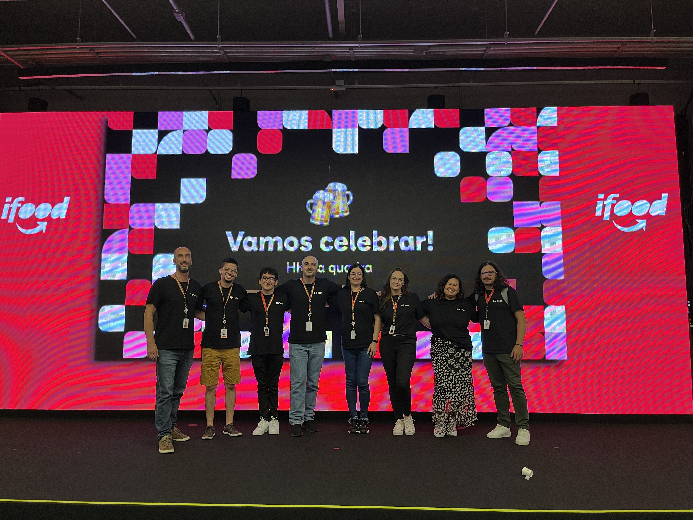

iFood
Janeiro de 2020 – Maio de 2024 · 4 anos 5 meses
PM Senior · Portal do Parceiro · 2022
O Portal do Parceiro é a plataforma B2B onde mais de 350 mil restaurantes gerenciam seu negócio dentro do iFood. A tensão de fundo era clara: muitos donos sentiam que eram obrigados a estar no iFood, sem perceber o valor que a plataforma podia gerar para eles. Além disso, não tinham benchmark — não sabiam se estavam indo bem ou mal, nem o que fazer para mudar.
A proposta do squad era transformar dados de performance em informação clara, acionável e gratuita — reforçando a percepção de parceria, não de dependência.
Como chegamos à solução
calendar_month Imersão diária com stakeholders
Contato quase diário com as áreas de negócio para entender expectativas e o que o produto precisava ser para eles
mic Pesquisa quali e quanti com restaurantes
Entrevistas individuais e dinâmicas em grupo no fórum de parceiros para entender o que travava a compreensão dos dados
bar_chart Viabilidade com o time de dados
Alinhamento contínuo com analytics para mapear quais dados existiam, o que era confiável e o que era possível disponibilizar
O que foi construído
Painel de métricas
Vendas, pedidos e ticket médio em um só lugar
Benchmark com similares
Comparativo com restaurantes da mesma categoria e região
Recomendações de ação
O que fazer concretamente para melhorar a performance
Mapa de clientes
Onde estão geograficamente os clientes do restaurante
Itens mais vendidos
Quais pratos vendem mais e em que dias da semana
Tooltips explicativos
Linguagem acessível para donos com menor maturidade de dados
A descoberta central
O maior obstáculo não era falta de dados — era linguagem. Os donos de restaurante não entendiam os termos técnicos. Trocar o jargão por palavras do dia a dia, contextualizar os números com benchmarks e adicionar tooltips explicativos foi o que virou a agulha do CSAT.
Um restaurante no modelo dark kitchen relatou que, ao ver o mapa de localização dos seus clientes pela primeira vez, percebeu que podia mudar de endereço e economizar significativamente em frete — uma decisão estratégica que os dados tornaram possível.
Feedback qualitativo recebido após o lançamento do mapa de clientes

O produto
O iFood Shop é o marketplace B2B do iFood — uma plataforma onde restaurantes compram insumos, embalagens e produtos de fornecedores diretamente pelo ecossistema do iFood. Durante quase 3 anos, passei pelas principais alavancas do produto: da logística até a refatoração completa do checkout.
PM Senior · iFood Shop · 2022 – 2024
O iFood Shop herdou o carrinho do app do iFood consumidor — que funciona bem para pedir uma pizza, mas não para o comportamento B2B. Restaurantes pesquisam, comparam preços entre fornecedores e montam o carrinho gradualmente. O funil mostrava que esse desalinhamento estava custando caro em conversão.
O diagnóstico · antes da refatoração
O que a pesquisa revelou
shopping_cart Carrinho que esvaziava
Ao trocar de fornecedor, todos os itens sumiam — comportamento do app do consumidor que não faz sentido no B2B
bug_report Bugs que travavam o fluxo
Teclado que subia e não fechava mais, bloqueando o usuário no meio da jornada
sync Etapas na ordem errada
Pagamento vinha antes de entrega — mas o frete altera o valor final, forçando o usuário a voltar e revisar
O que foi construído
Carrinho multi-seller
Restaurantes adicionam itens de múltiplos fornecedores e fecham um pedido por vez
Fluxo invertido: entrega → pagamento
O usuário vê o valor final com frete antes de escolher o método de pagamento
Redesign do carrinho
Nova hierarquia visual, resumo claro do pedido e arquitetura de informação revisada
Correção de bugs e feedback
Eliminação dos erros que quebravam o fluxo e melhoria das mensagens de erro
↑ 9 pontos percentuais
51%
conversão no carrinho
↑ 12 pontos percentuais
17%
conversão total no app
GMV 2,5×
1MM
de 400 mil → 1 milhão em GMV
PM Pleno · iFood Shop · 2022
No squad de Admin para Fornecedores, o foco era dar autonomia operacional aos fornecedores do Shop. Antes dessa funcionalidade, qualquer ajuste em um pedido — item em falta, quantidade errada ou cancelamento — exigia que o fornecedor contatasse o suporte do iFood, que então entrava em contato manualmente com o restaurante comprador.
Antes da feature
Processo lento, dependente de terceiros e gerador de chamados.
O que mudou
Fornecedor edita o pedido diretamente na plataforma
Três tipos de edição disponíveis
block Ruptura total
Item completamente indisponível no estoque
inventory_2 Redução de quantidade
Pediu 10, tem só 6 — ajuste parcial
cancel Cancelamento total
Pedido inteiro indisponível para entrega
Processamento automático
Sistema calcula e processa o estorno por método de pagamento
Lógica específica para cada forma — sem intervenção manual
credit_card Cartão de crédito
Novo pré-aprovado gerado na mesma sessão
smartphone PIX
Estorno instantâneo para a chave de origem
receipt Boleto a prazo
Novo boleto emitido com valor ajustado
Resultado
O suporte saiu completamente do loop. Fornecedores passaram a resolver ocorrências de forma autônoma, o estorno foi automatizado por método de pagamento e os chamados relacionados a pedidos com problema caíram significativamente — sem nenhuma intervenção manual necessária.
PM Júnior · iFood Shop · 2021 – 2022
Minha primeira posição como PM foi no squad de pós-venda e logística do iFood Shop. O desafio central era expandir a base de fornecedores sem frota própria e melhorar a experiência de entrega de ponta a ponta. Três frentes principais:
Logística como Serviço (LaaS)
Integração de transportadoras terceiras ao ecossistema do Shop, abrindo portas para fornecedores sem frota própria. Solução escalável e replicável para o marketplace.
Ver publicação →Agendamento de Entregas
Feature que permitia restaurantes planejarem recebimentos com antecedência — menos imprevistos na operação e mais controle sobre o fluxo de estoque.
Fluxo de Comunicação
Estruturação do fluxo de comunicação pós-compra via e-mail e WhatsApp, mantendo fornecedores e compradores alinhados ao longo de toda a jornada de entrega.
Resultado
A integração via LaaS abriu o marketplace para fornecedores sem frota própria, aumentando diretamente a base de parceiros disponíveis. O agendamento de entregas e o fluxo de comunicação pós-compra reduziram os atritos operacionais — melhorando a experiência de restaurantes e fornecedores ao longo de toda a jornada.
Origem · 2020 – 2021
Entrei no iFood como Engenheira de Software pelo programa Mobile Dream — iniciativa do iFood para contratar e desenvolver analistas júniors. Trabalhei no backend do Portal do Parceiro, no produto de Cardápio. Essa experiência foi o ponto de partida: entender profundamente como o produto funcionava por dentro me deu a base para a transição interna para Product Management.